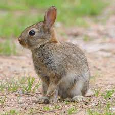
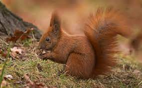
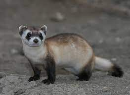
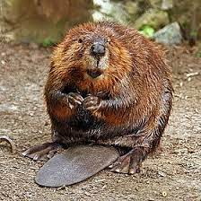
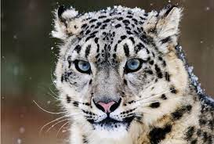
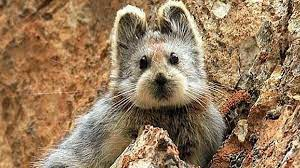
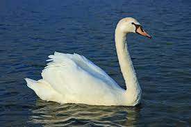
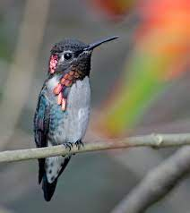
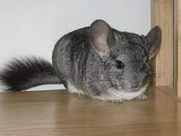

OS ANIMAIS MAIS FOFOS DO MUNDO
Os animais são mais do que simples companheiros; eles desempenham papéis fundamentais na vida dos humanos. Além de oferecerem conforto e alívio do estresse, eles promovem saúde mental, proporcionam um senso de propósito e fortalecem as conexões sociais. Esses amigos peludos não só nos oferecem amor incondicional, mas também ensinam importantes lições sobre responsabilidade e compaixão. Em suma, os animais de estimação são essenciais para o bem-estar humano, trazendo alegria, significado e uma profunda conexão emocional às nossas vidas.
Coelho Angorá (Oryctolagus cuniculus)
Em termos de tamanho, os Coelhos Angorá são considerados médios, visto que na idade adulta pesam entre 3 e 5 quilos.Contrariamente a outras raças de coelhos, os Coelhos Angorá não mudam de pelo ao longo do ano. Assim, independentemente da estação do ano, o pelo destes orelhudos cresce continuamente. Esta característica significa que os coelhos precisam de ser tosquiados a cada 3 meses .Com o pelo farto e macio, os Coelhos Angorá são especialmente fofinhos.
Esquilo-vermelho (Sciurus vulgaris)
O esquilo-vermelho tem um comprimento típico de 19 a 23 cm (excluindo a cauda), uma cauda entre 15 e 20 cm de comprimento e um peso entre 250 e 340g. Habita a floresta conífera, encontrando-se também em florestas temperadas caducifólias, alimenta-se de sementes de árvores, conseguindo limpar cones de coníferas para obter as suas sementes.
Doninha-de-patas-pretas (Mustela nigripes)
Medem cerca de 40 cm. Também conhecida como toirão-americano ou furão-do-pé-preto, é uma espécie de mustelídeo nativa do centro da América do Norte. Está listada como em perigo pela IUCN por ocorrer em populações restritas e diminutas.Existem atualmente cerca de 1000 indivíduos adultos nascidos em estado selvagem, perfazendo cerca de 18 populações.
Foca-monge-do-mediterrâneo (Monachus monachus)

Habita mar aberto durante os períodos de deslocação entre ilhas e em redor das ilhas. Utiliza ainda zonas de baixa profundidade junto à costa, costas rochosas com falésias em que existam grutas e praias de calhaus rolados ou areia.Alimenta-se geralmente de peixes, crustáceos e cefalópodes (e.g. polvo-comum).Pode atingir os 400kg e os 4 metros de comprimento. Apresenta pelugem castanha ou cinzenta, mais escuro no dorso e clareando progressivamente até a face ventral
Castor americano (Castor canadensis)
É uma das duas espécies de castores. É nativo da América do Norte, mas foi introduzido na Escandinávia e Patagônia.Os valentes castores constroem diques para criar reservatórios de água profundos onde podem se abrigar de predatores, fazendo fluir o próprio alimento e os materiais de construção que utilizam. Outra característica física curiosa é sua cauda achatada e arredondada, usada como leme e remo quando ele está nadando. O cardápio de um castor não tem nada de apetitoso: é na base de cascas e folhas de árvores mesmo.
Leopardo-das-neves (Panthera uncia)
Esses leopardos pardos cobertos de pintas vivem nas montanhas da Ásia Central. Seu isolamento térmico é obtido com a pelagem espessa e suas grandes patas peludas que atuam como sapatos de neve naturais. Os leopardos-das-neves possuem pernas potentes e são excelentes saltadores, capazes de pular distâncias de 15 metros. Esses grandes felinos usam suas longas caudas para se equilibrar e também como cobertores para proteger partes sensíveis do corpo contra o frio intenso das montanhas. Eles são arredios e reclusos, e raramente são vistos na natureza.
Pika-de-lli (Ochotona iliensis)
A espécie é endêmica de Xinjiang, no noroeste da China, onde é encontrada em altitudes de 2 800 a 4 100 metros nas cordilheiras de Tian Shan. A distribuição é fragmentada e um censo recente registrou o desaparecimento do animal nas montanhas Jilimalale e Hutubi South. Desde a sua descoberta, foram raras as vezes em que este mamífero foi visto. Em 2014, durante uma expedição à cordilheira Tian Shan, o mesmo cientista que descobriu a espécie conseguiu fotografar um exemplar.
Cisne branco (Cygnus olor)
O cisne-branco, cisne-mudo ou cisne-vulgar, (Cygnus olor) é uma espécie de cisne nativa da Eurásia. É uma ave não migratória, mas foi introduzida na América do Norte e noutras regiões como animal ornamental de jardins.Quando adultos, o cisne-branco tem em média entre 125 a 170 cm de altura, com uma longa extensão de asas que variam de 200 a 240 cm. Eles podem repousar até 1.2 m de altura em terra. Os machos são maiores do que as fêmeas.
Colibri-abelha-cubano (Mellisuga helenae)
O macho tem o píleo verde e a garganta vermelha, com plumas laterais alongadas, a parte superior é azulada, e nas partes inferiores restantes são principalmente brancas ou acinzentadas. O macho é menor que a fêmea. A fêmea é verde na parte superior, e branca na parte inferior.Usando pedaços de teias de aranha, cascas e líquens, a fêmea constrói um ninho em forma de taça que é apenas cerca de 2,5 cm de diâmetro. Ela forra o ninho com fibras de plantas. Neste ninho, ela põe seus ovos, que são do tamanho de ervilhas. Ela só incuba os ovos e põe apenas dois ovos por vez.
Chinchila comum (Chinchilla lanigera)
As chinchilas são roedores que pesam de 500 gramas a 8 Kg e são herbívoros. Sua grande quantidade de pelos auxilia na proteção contra predadores, como pulgas, além de regular a temperatura corpórea nas regiões naturais, que são muito quentes de dia e muito frio à noite. Algumas espécies são exímias escavadoras, formando galerias embaixo da terra. São animais sociais que vivem em grupos de até uma centena de indivíduos.